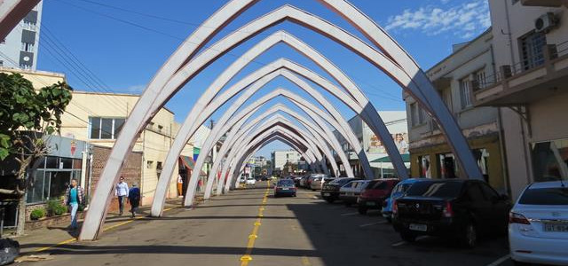

Frederico Westphalen
Rua dos Arcos

Catedral
Rua Maurício Cardoso

Freerico Westphalen
Santuário Cristo Rei
Sobre
Frederico Westphalen é um município brasileiro do estado do Rio Grande do Sul. Localiza-se a uma latitude 27º21'33" sul e a uma longitude 53º23'40" oeste, estando a uma altitude de 566 metros. Sua população, de acordo com a estimativa para 2017, feita pelo IBGE, é de 30.832[3] habitantes. Possui uma área de 264,53 km². É o centro regional da microrregião homônima.
Distância
 | Rota de Viagem | Distância (km) | Tempo estimado de viagem |
|---|---|---|---|
| De carro | 428 km | 5 horas 34 min | |
| À pé | 428 km | 3 dias 17 horas | |
| Avião - linha reta | 304 km | 27.4minutos |
Contato
Daniele Piaia dos Santos e Natalia da Silva
Copyright@ 2016